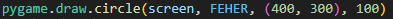
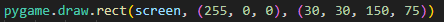
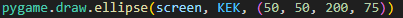
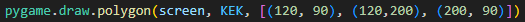

Hasznos oldal, ahol megtalálhatsz minden szükséges információt alakzatok rajzolásáról a "draw" menüpontra kattintva
Pár gyakori alakzat rajzolása:
1. kör - pygame.draw.circle()
Kötelező paraméterei: (felület, szín, (középpontjának_koordinátái), kör_sugara)
2. négyszögek - pygame.draw.rect()
Kötelező paraméterei: (felület, szín, (pozíciója és mérete))
3. elipszis - pygame.draw.ellipse()
Kötelező paraméterei: (felület, szín, (pozíciója és mérete))
4. sokszögek - pygame.draw.polygon()
Kötelező paraméterei: (felület, szín, [(csúcsok_koordinátája), (), ()])
